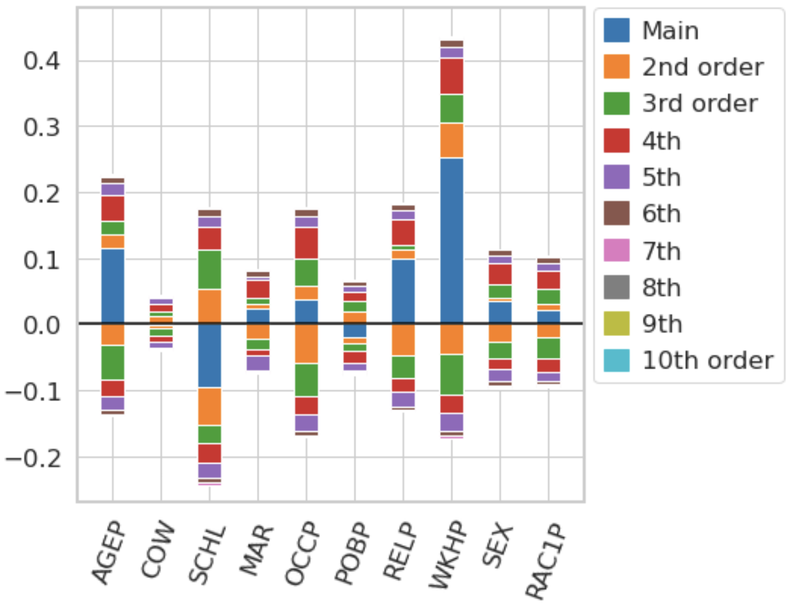
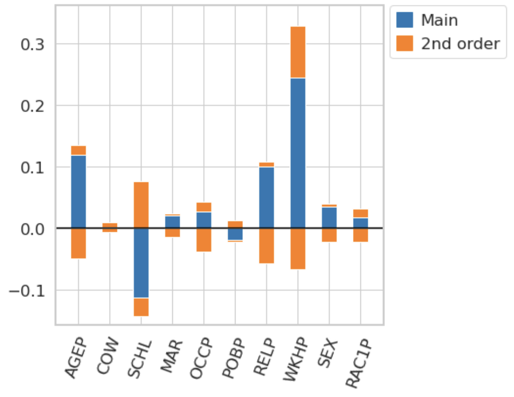
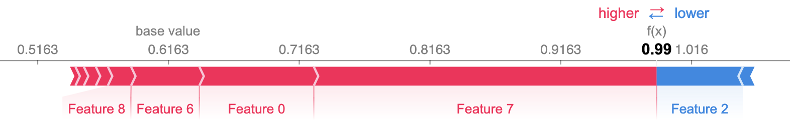
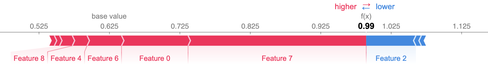

A Simple Example
Let’s assume that we have trained a Gradient Boosted Tree on the https://github.com/zykls/folktables Income data set.
gbtree = xgboost.XGBClassifier()
gbtree.fit(X_train, Y_train)
print(f'Accuracy: {accuracy_score(Y_test, gbtree.predict(X_test)):0.3f}')
Accuracy: 0.829
In order to compute n-Shapley Values, we need to define a value function. The function nshap.vfunc.interventional_shap approximates the interventional SHAP value function.
import nshap
vfunc = nshap.vfunc.interventional_shap(gbtree.predict_proba,
X_train,
target=0,
num_samples=1000)
The function takes 4 arguments
The function that we want to explain
The training data or another sample from the data distribution
The target class (required here since ‘predict_proba’ has 2 outputs).
The number of samples that should be used to estimate the conditional expectation (Default: 1000)
Equipped with a value function, we can compute n-Shapley Values.
n_shapley_values = nshap.n_shapley_values(X_test[0, :], vfunc, n=10)
The function returns an object of type nShapleyValues. It is a python dict with some added functionallity.
To get the interaction effect between features 2 and 3, simply call
n_shapley_values[(2,3)]
0.0074
To generate the plots in the paper, call
n_shapley_values.plot(feature_names = feature_names)
{kind=link}

and to compute 2-Shapley Values and generate a plot, use
n_shapley_values.k_shapley_values(2).plot(feature_names = feature_names)
{kind=link}

We can also compare these results with the Shapley Values returned by the https://github.com/slundberg/shap/ package.
For this, we approximate the Shapley Values with Kernel SHAP
import shap
explainer = shap.KernelExplainer(gbtree.predict_proba, shap.kmeans(X_train, 25))
shap.force_plot(explainer.expected_value[0], shap_values[0])
{kind=link}

and then generate the same plot for the Shapley Values that we just computed with the nshap package.
shap.force_plot(vfunc(X_test[0,:], []), n_shapley_values.shapley_values())
{kind=link}

There are slight differences which is not surprising since we used two very different methods to compute the Shapley Values.